S39#
Avtor: Špela Longar
Datum izdelave: 2024-05-17
Koda seminarja: S39
Vhodni podatek#
Povezava do datoteke z vhodnim podatkom: S39
Rezultati analiz#
Nukleotidno zaporedje vključka#
S pomočjo uporabe progama EMBOSS Stretcher sem naredila lokalno poravnavo dveh nukleotidnih zaporedij. Le en odsek se ni popolnoma ujemal, torej je bil to naš vključek.
Nukleotidno zaporedje: GAAAAAACAGACAATAAACTGGATATCTGTACTATTTGTAATGCCAAATCAGGTTTATGCAGCGAGGATTGTAAATTCTGCACGCAGTCGGTTCATTATGAGACGGGAACACCTGTATACCCCATGATGAACATTGATGAGATAATGGAAAACGCTCACAAGGCCAAAGAGAACGGTAGCAAAAGGGTTGGCATCGTTACGAGCGGTCACAGTCTTAACTCTGAAGAGGTTGATTTCATAGCAAATGTAGTTAAAGAAATCAAAGATAAGCTCGACATAGAAGTATGTGCGTCTCTGGGATGCCTGGATTACGATCAAATGGTCCTTCTCAAAAAATCGGGCTTAAGCCGCTATCATCATAATATTGAGACATCAAGGGAGCATTTCCCGAAAATAGTTTCTACACATACATTTAATGACCGCATCACTACTGTACGTAATGCCGTTAAGGCGGGACTCTTTACGTGTTGCGGGGGTATTATCGGAATGGGTGAATCGCGCAAGGACAGGGCAAATATGGCGCTTACCTTGAAGGAACTGAAGGTGGATTCGGTTCCTATTAATATTCTTATGCCCCTTACCGGAACTCCGCTTGCCGGAATTATACCTATTACAGTGTCCGAGGTGTTAAAAACAATTGCTGTATTTCGGATTGTAATGCCTGATAAAACAATCAAAATCGCTGCCGGCCGGGAAAGTTTTTTAAAAGACTTTCAAGGAATGGCGTTTATGTCCGGCGCAAATGGAATGCTCATAGGCGGATACCTTACCCAGCGTGGCCGGTCTGTTGAAGAAGACAAGAATATGATCGATGAGATACATCACATATGGAATTTATAAAAGCTTATTTGGCAAAAAGAAAAAATGAAAACACCCTGCGGTCACTTTTGGCGCTTGATGCCAGAGGTCCGGGCGTGATTGTCCGGCAGGGACGGAAATATGTTGACTTCTCTTCCAATGATTATCTGGGACTCTCCAGACATCCAAAACTCATTGATGCTTCCAGGAAGGCTCTGGAGATTTATGGG
Iskanje proteina#
Dobljeno nukleotidno zaporedje sem vstavila v program BLAST. Izbrala sem opcijo blastx, ker je bil moj vhodni podatek nuklotidno zaporedje in iskanje rezultata je potekalo po bazi z aminokislinskimi zaporedji. Za podatkovno bazo sem izbrala metagenomsko zbirko, saj se je raziskovalna skupina ukvarjala s metagenomiko. Rezultat analize, ki je imen najboljše parametre je bil biotin synthase, hydrocarbon metagenome. Aminokislinsko zaporedje sem pridobila na Genbanku, katerega identifikaciska koda je bila navedena v BLASTu.
Aminokislinsko zaporedje: MKLEKILDLFDMPLTALAAKADKIRREKTDNKLDICTICNAKSGLCSEDCKFCTQSVHYETGTPVYPMMNIDEIMENAHKAKENGSKRVGIVTSGHSLNSEEVDFIANVVKEIKDKLDIEVCASLGCLDYDQMVLLKKSGLSRYHHNIETSREHFPKIVSTHTFNDRITTVRNAVKAGLFTCCGGIIGMGESRKDRANMALTLKELKVDSVPINILMPLTGTPLAGIIPITVSEVLKTIAVFRIVMPDKTIKIAAGRESFLKDFQGMAFMSGANGMLIGGYLTQRGRSVEEDKNMIDEIHHIWNL
Rezultati iskanja blastx: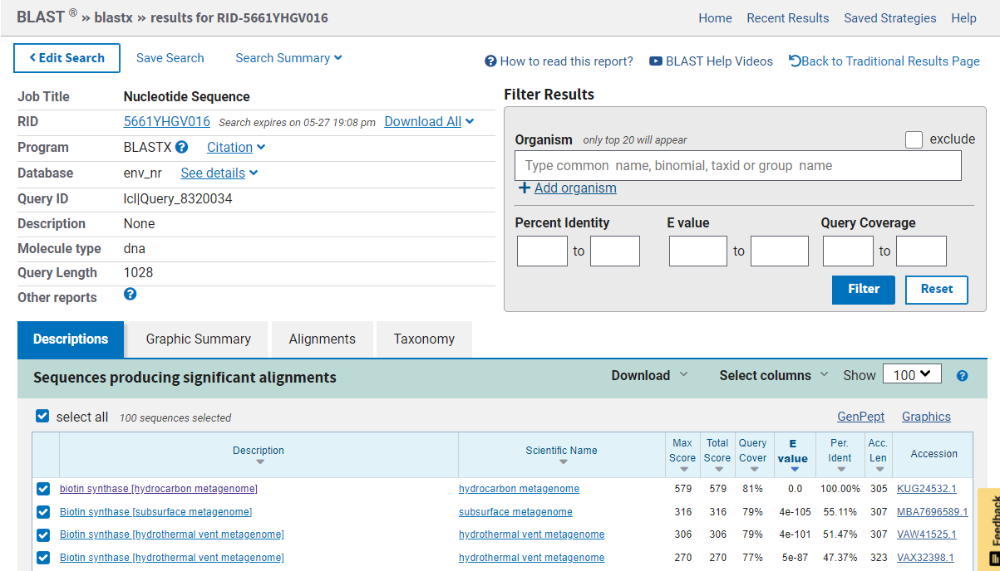
To zaporedje sem nato ponovno uporabila v programu BLAST, opcija blastp. Izbrala sem podatkovno bazo non-redundant protein sequence. Protein, ki je imel najboljše ujemanje oz. podobnost z vnešenim aminokislinskim zaporedjem, je bil hipotetični protein DS62_04135. Njegovo aminokislinsko zaporedje sem pridobila iz Genbanka. Protein sem nato poiskala na Uniprotu in za ostale analize uporabila podatke iz tam.
Aminokislinsko zaporedje: MELEEIISLFDVPLSELAAKADKVRREKTDNKLDICTLCNARSGLCSEDCKFCAQSVHYDTGTPVYSMMSINEIMENAFKARENGSKRFGIVTSGQGLNMEEVGFIATVVKEIKNKLDIEVCASLGCLDYDQLVLLKKSGLSRYHHNIETSREYFPKIVSTHTFDDRIITVRNAVKAGLSTCSGGIIGMGESRRDRANMALTLKELNVDSVPINILMPLAGTPLTEITPITMSEVLKTVAAFRILMPDKTIKIAAGRESFLKDFQGMAFMSGANGMLIGGYLTQRGRSIEEDKNMIDELHHIWNL
Rezultati iskanja blastp: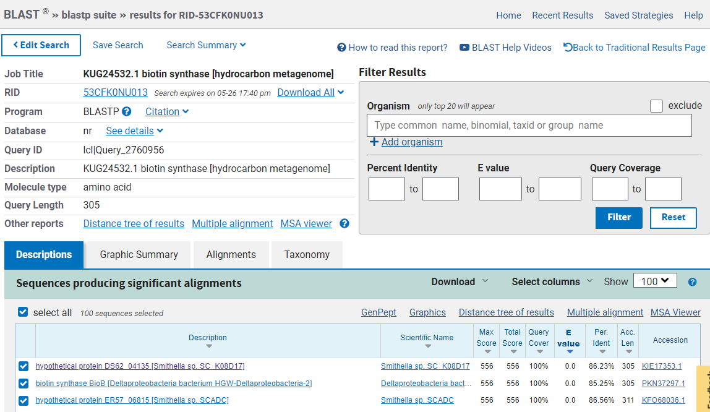
Lastnosti proteina#
Ime in izvorni organizem proteina: Biotin sintaza, Smithella sp. SC_K08D17
Lokalizacija, topologija: Protein ni anotiran in nima znane lokacije, zato sem spomočjo blastp poiskala najbolj podobne proteine. Iskanje pa sem izvedla po podatkovni bazi UniprotKB/Swiss-prot, da bi preverila le anotirane proteine. Vendar tudi pri dobljenih podobnih proteinih ni bilo navedene lokacije.
Rezultati iskanja blastp: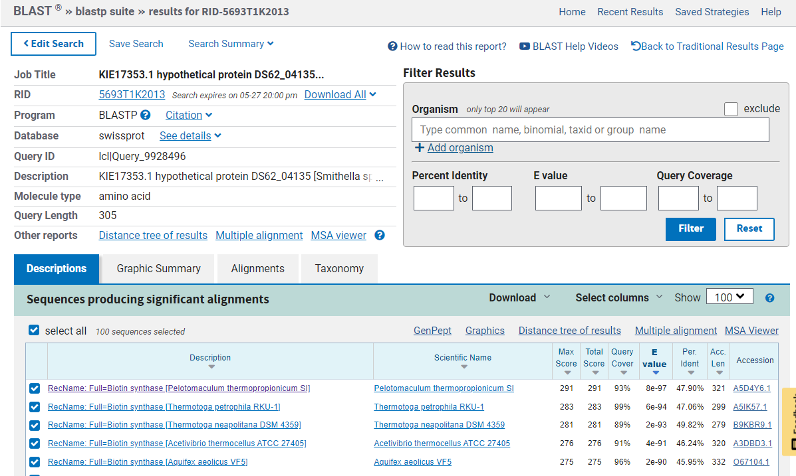
Velikost proteina: 305 aminokislinskih ostankov
Lastnosti proteina: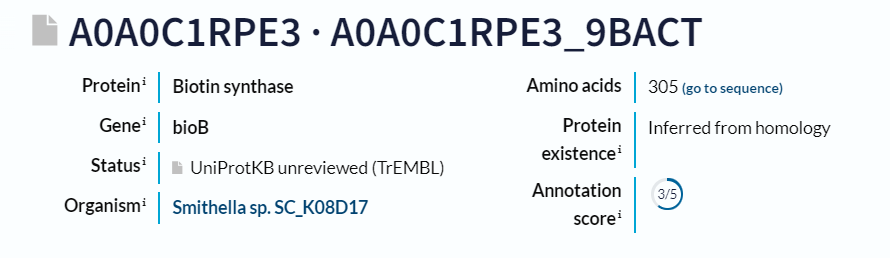
Domenska zgradba: Ima domeno Radical SAM core dolgo 227 aminokislinskih ostankov.
Prikaz domene na Uniprotu: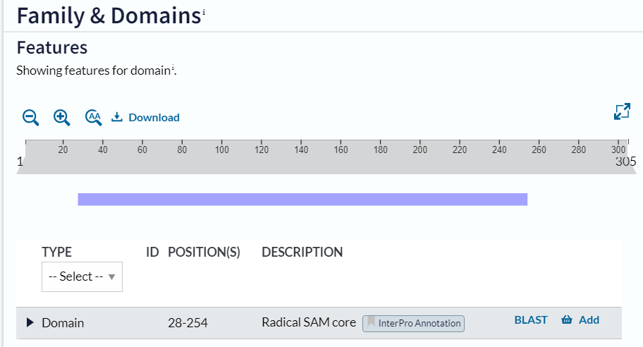
Prikaz domene na InterPro: 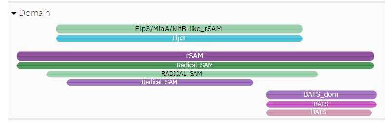
Post-translacijske modifikacije: Ni navedenih nobenih modifikacij. Tudi podobni anotirani proteini, ki sem jih dobila s enakim iskanjem kot goraj navedenim pri lokaciji, nimajo post-translacijskih modifikacij.
Rezultat iskanja blastp:
Primer podobnega proteina brez post-translacijskih modifikacij: 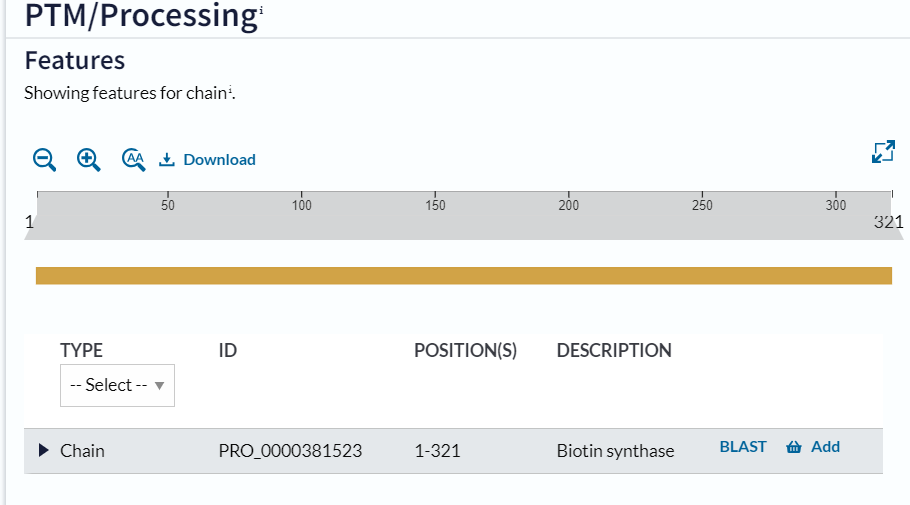
Funkcija proteina#
Je transferaza in deluje pri biosintezi biotina. Katalizira pretvorbo detiobiotina (DTB) v biotin z vstavitvijo atoma žvepla v detiobiotin preko mehanizma, ki temelji na radikalih.
Reakcija, ki poteče: (4R,5S)-dethiobiotin + [sulfur carrier]-SH + 2 reduced [2Fe-2S]-ferredoxin + 2 S-adenosyl-L-methionine = 2 5’-deoxyadenosine + [sulfur carrier]-H + biotin + 2 L-methionine + 2 oxidized [2Fe-2S]-ferredoxin
Kofaktorji: [2Fe-2S], [4Fe-4S]
Sorodni proteini#
Sorodne proteine sem poiskala s pomočjo programam BLAST. V blastp sem vnesla aminokislinsko zaporedje biotin sintaze. Dobljena zaporedja vnesla v Clustal Omega, kjer se je izvedla poravnava večih zaporedij. Zaporedja pa nato s programom Phylo.io predstavila kot filogenetsko drevo.
Sorodni proteini:
Poravnava ClustalOmega: 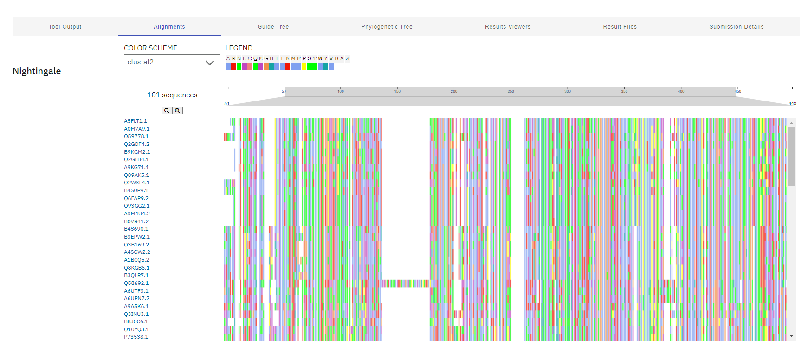
Filogenetsko drevo: 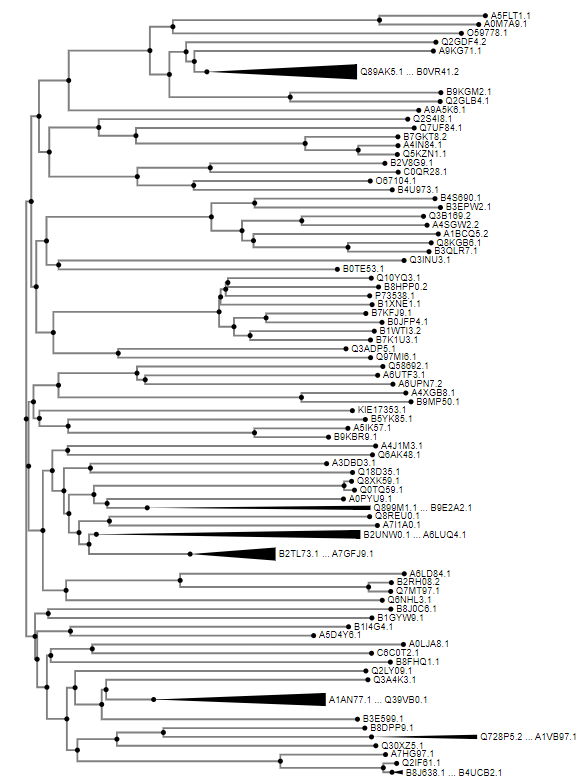
Ohranjene regije#
Izvedla sem blastp z aminokislinskim zaporedjem biotin sintaze. Podatke pridobila pod oknom Graphic Summary.
Ohranjene domene: 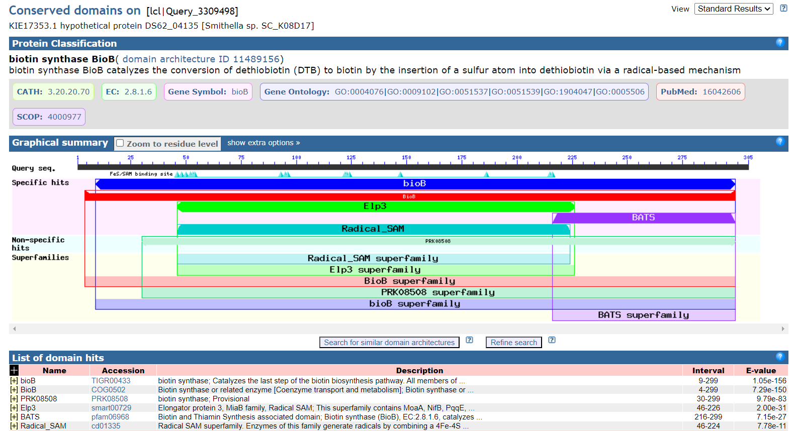
Najbolj ohranjene regije sem pridobila tudi tako, da sem izvedla PSI-BLAST (4 iteracije). PSI-blast uporablja pozicijsko uteženo matriko, tako so na ohranjenih mestih bolje točkovani ak-ostanki, ki so značilni za neko pozicijo, kar omogoča detekcijo bolj oddaljenih homologov, pri katerih je morda dobro ohranjenih zgolj nekaj ak-ostankov. Nato sem uporabila pripomoček Cobalt, saj izračuna poravnavo več proteinskih zaporedij z uporabo ohranjenih podatkov o podobnosti domene in lokalnega zaporedja. Rdeča označuje visoko ohranjene položaje, modra pa nižjo ohranjenost. Za bolšo predstavo bi lahko nekatere regije predstavila s pripomočkom WebLogo.
Rezultati Cobalta: 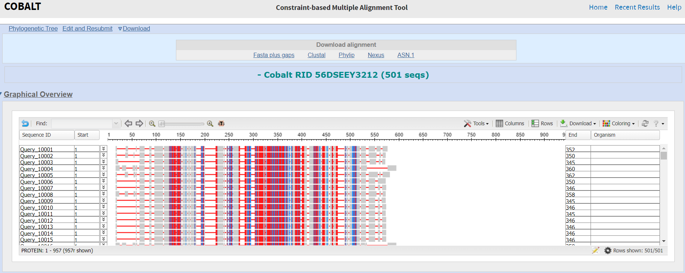
Podobni evkarionti#
Ponovno sem uporabila blastp, podatkovno bazo Uniprot/Swiss-prot, pod organizem Eucarya in izvedla iskanje. Rezultat je vrnil 4 podobne evkariontske proteine:
Protein |
Organizem |
Funkcija |
|---|---|---|
Biotin synthase |
Schizosaccharomyces pombe (strain 972 / ATCC 24843) (Fission yeast) |
transferaza pri biosintezi biotina |
Biotin synthase, mitochondrial |
Emericella nidulans (strain FGSC A4 / ATCC 38163 / CBS 112.46 / NRRL 194 / M139) (Aspergillus nidulans) |
transferaza pri biosintezi biotina |
Biotin synthase, mitochondrial |
Saccharomyces cerevisiae (strain ATCC 204508 / S288c) (Baker’s yeast) |
transferaza pri biosintezi biotina |
Biotin synthase, mitochondrial |
Arabidopsis thaliana (Mouse-ear cress) |
transferaza pri biosintezi biotina |
Rezultati iskanja blastp: 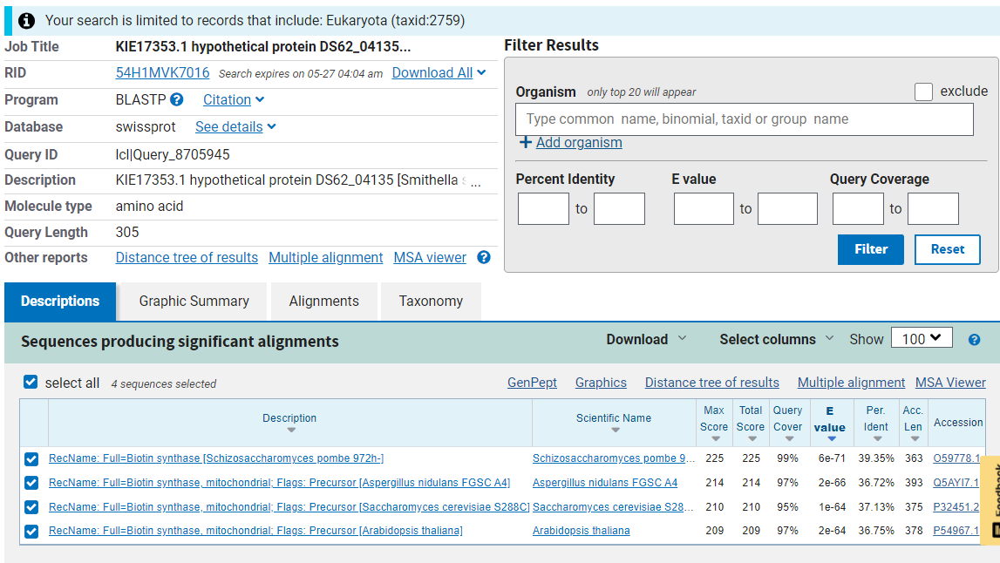
Medproteinske interakcije#
Ker za biotin sintazo ni bilo navedenih interakcij, je program STRING predlagal podobne proteine, za katere sem lahko prikazala medproteinske interakcije v bakteriji. Proteini s katerimi ima interakcije sodelujejo pri biosintezi biotina, biosintezi arginina, De novo biosintetske procesu UMP, presnovi lizina, biosintezi alfa-aminokislin. Ta protein ima interakcije z 8 ostalimi proteini.
Predlagani podobni proteini: 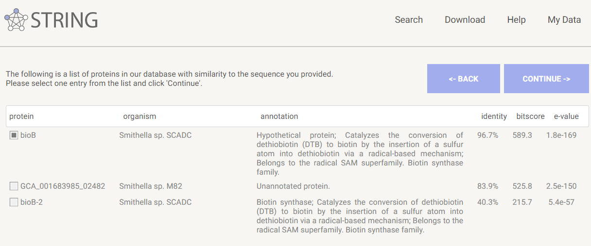
Rezultat analize z STRING: 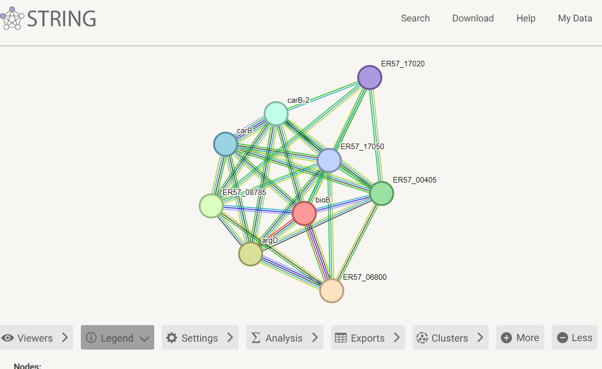
Struktura oz. model sturkture#
Struktura proteina je bila napovedana s Alfafoldom. Struktura je modre barve, kar po barvanju pLDDT pomeni, da je napovedana struktura zanesljiva.
Rezultati napovedi:
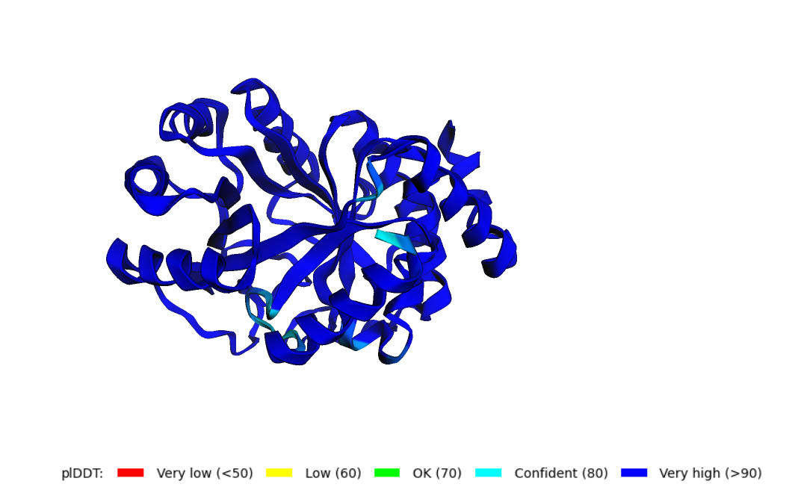
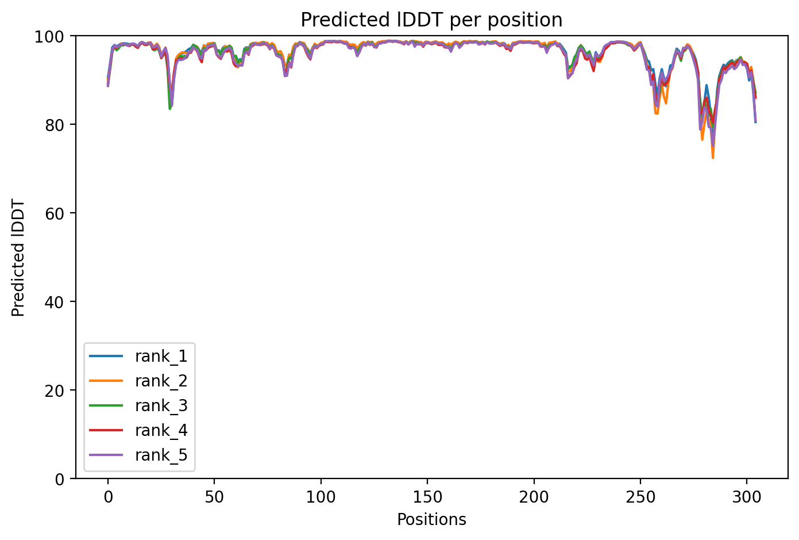
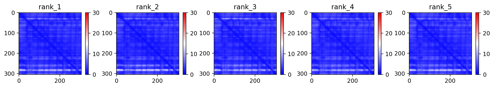
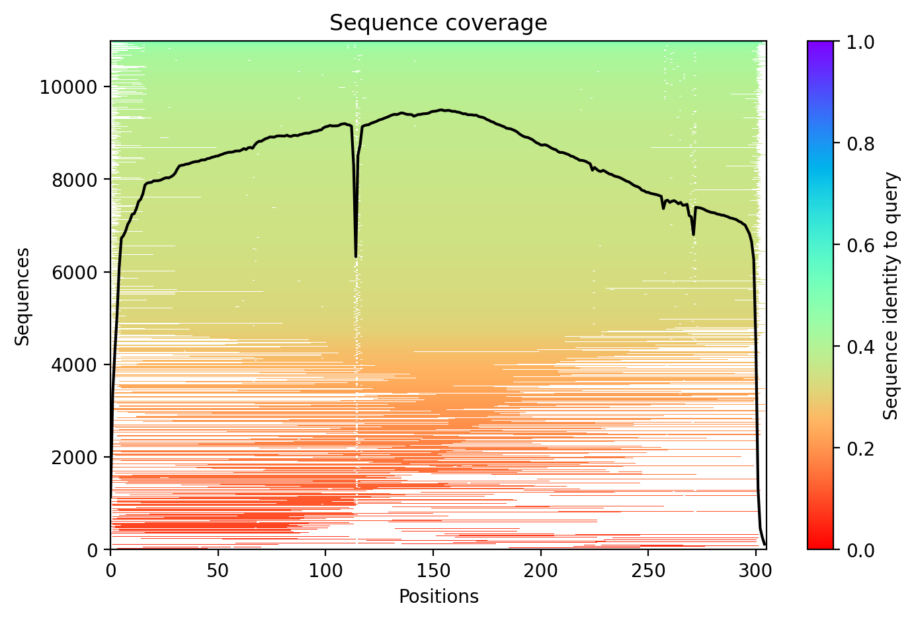
Izvedla sem še superpozicijo z najbolj podobnim prokariontskim in evkariontskim proteinom, ki sej jih pridobila s pomočjo blastp. Verige so pobarvane po pLDDT, pri superpoziciji pa je veriga našega proteina pobarvana vijolično za boljše razlikovanje med strukturami. Opazimo, da so si strukture (kot funkcije) podobne med sabo. Pri prokariontskem proteinu je seveda večja podobnost, zaradi enakega organizma.
Iskanje prokarionstkega proteina: 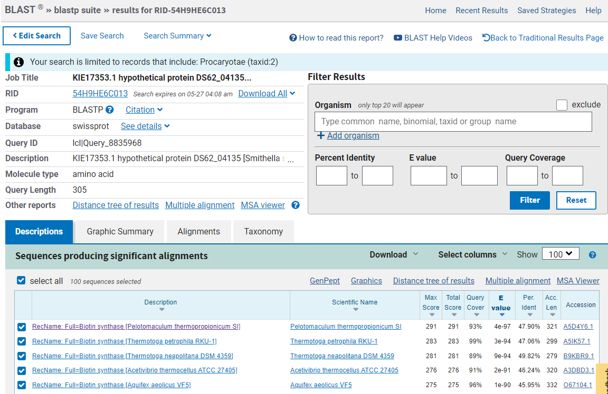
Iskanje evkariontskega proteina:
Struktura v Molstaru: 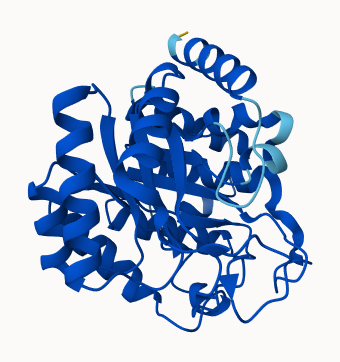
Superpozicija z evkariontskim proteinom: 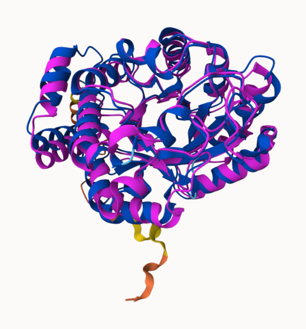
Superpozicija s prokariontskim_proteinom: 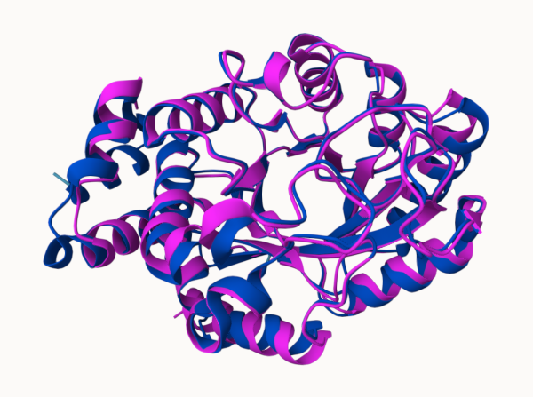
Seja: